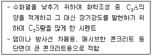
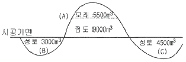
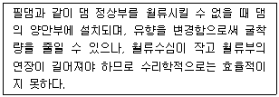
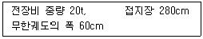
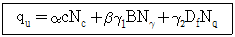

건설재료시험산업기사 (2018-03-04 기출문제)
1과목: 콘크리트공학
1. 외력에 의해 일어나는 응력을 소정의 한도까지 상쇄할 수 있도록 미리 인공적으로 그 응력의 분포와 크기를 정하여 내력을 준 콘크리트를 무엇이라고 하는가?
- 프리캐스트 콘크리트
- 프리플레이스트 콘크리트
- 매스 콘크리트
- 프리스트레스트 콘크리트
(정답률: 83%)

2. 콘크리트의 휨강도 시험에 대한 설명으로 틀린 것은?
- 공시체는 단면이 정사각형인 각주로 하고, 그 한변의 길이는 굵은 골재의 최대 치수의 4배 이상이며 100mm 이상으로 한다.
- 공시체의 길이는 단면의 한 변의 길이의 2배 이상 긴 것으로 한다.
- 시험할 때 지간은 공시체 높이의 3배로 한다.
- 하중을 가하는 속도는 가장자리 응력도의 증가율이 매초 0.06±0.04MPa이 되도록 한다.
(정답률: 42%)
3. 다음 중 콘크리트 받아들이기 품질 검사 항목이 아닌 것은?
- 반발경도
- 슬럼프
- 공기량
- 염소이온량
(정답률: 65%)
4. 국내의 레디믹스트 콘크리트 운반차량으로 가장 많이 사용되는 것은?
- 스크레이퍼
- 덤프트럭
- 콘크리트 펌프카
- 애지데이터 트럭
(정답률: 79%)
5. 프리플레이스트 콘크리트의 일반적인 특성으로 잘못 설명된 것은?
- 초기강도가 일반 콘크리트보다 크다.
- 블리딩 및 레이턴스가 적다.
- 수축률은 일반 콘크리트보다 작다.
- 동결융해에 대한 저항성이 크다.
(정답률: 49%)
6. 프리텐션 방식으로 프리스트레싱할 때의 콘크리트 압축강도는 최소 얼마 이상이어야 하는가? (단, 실험이나 기존의 적용 실적 등을 통하여 안전성이 증명된 경우를 제외한다.)
- 26 MPa
- 28 MPa
- 30 MPa
- 35 MPa
(정답률: 67%)
7. 경량골재 콘크리트인 경우 몇 MPa 이상인 콘크리트를 고강도 콘크리트라고 하는가?
- 20 MPa
- 24 MPa
- 27 MPa
- 30 MPa
(정답률: 68%)
8. 콘크리트의 배합에 대한 설명으로 틀린 것은?
- 작업에 적합한 워커빌리티를 갖는 범위 내에서 단위수량은 될 수 있는 대로 적게 한다.
- 현장 콘크리트의 품질변도을 고려하여 콘크리트의 배합강도(fcr)를 설계기준 압력강도(fck)보다 충분히 크게 정하여야 한다.
- 배합강도를 결정할 때 압축강도의 표준편차는 실제 사용한 콘크리트의 20회 이상의 시험실적으로부터 결정하는 것을 원칙으로 한다.
- 물-결합재비는 소요의 강도, 내구성, 수밀성 및 균열저항성 등을 고려하여 정하여야 한다.
(정답률: 76%)
9. 콘크리트 강도에 영향을 미치는 요인에 대한 설명 중 틀린 것은?
- 부배합의 콘크리트에서 물-시멘트비가 동일하면 굵은 골재의 최대치수가 클수록 압축강도는 감소한다.
- 염분을 함유한 해사를 사용한 콘크리트의 조기강도는 다소 증가하지만 장기강도는 감소한다.
- 강도시험을 할 때 재하속도가 빠르면 콘크리트의 압축강도는 크게 나타난다.
- 고강도 콘크리트에서는 골재의 강도가 콘크리트의 압축강도에 미치는 영향이 작다.
(정답률: 62%)
10. 콘크리트 압축강도 시험에서 공시체 지름이 150mm, 높이가 300mm 이고 파괴 시 최대 하중이 400kN일 때 압축강도는?
- 18.0 MPa
- 20.4 MPa
- 22.6 MPa
- 24.2 MPa
(정답률: 50%)
11. 콘크리트 타설 및 다지기에 대한 설명으로 틀린 것은?
- 타설한 콘크리트는 거푸집 내에서 횡방향으로 이동시켜서는 안 된다.
- 한 구획내의 콘크리트는 타설이 완료될 때까지 연속해서 타설하여야 한다.
- 내부진동기를 사용하여 진동다지기를 할 때 내부진동기의 찔러 넣는 간격은 일반적으로 1m 이하로 한다.
- 내부진동기를 사용하여 진동다지기를 할 때에는 진동기를 아래층의 콘크리트 속에 0.1m 정도 찔러 넣어야 한다.
(정답률: 77%)
12. 고강도콘크리트의 제조방법에 대한 설명 중 틀린 것은?
- 고강도콘크리트를 얻기 위해서는 물-결합재비를 낮게 하여야 한다.
- 잔골재율은 소요의 워커빌리티를 얻도록 시험에 의하여 결정하여야 하며, 가능한 작게 하도록 한다.
- 고강도콘크리트는 워커빌리티가 일반적으로 떨어지기 때문에 고성능감수제를 사용해야 한다.
- 고강도콘크리트는 공기연행제를 사용하는 것을 원칙으로 한다.
(정답률: 72%)
13. 알칼리골재반응을 막기 위한 대책으로 옳지 않은 것은?
- 반응성 골재를 사용하지 않는다.
- 빈배합의 콘크리트로 시공한다.
- 0.6% 이하의 알칼리량을 함유한 시멘트를 사용한다.
- 적당한 포졸란 또는 고로 슬래그를 사용한다.
(정답률: 54%)
14. 압축강도 시험의 기록이 없는 현장에서 설계기준압축강도가 20MPa인 경우 배합강도는?
- 27 MPa
- 28.5 MPa
- 30 MPa
- 31.5 MPa
(정답률: 71%)
15. 다음 중 일반적인 해양콘크리트에 사용하는 시멘트로 가장 부적합한 것은?
- 고로슬래그시멘트
- 플라이애쉬시멘트
- 중용열 포틀랜드시멘트
- 조강 포틀랜드시멘트
(정답률: 51%)
16. 일반 수중콘크리트 타설의 원칙을 설명한 것으로 틀린 것은?
- 콘크리트는 수중에 낙하시키지 않아야 한다.
- 완전히 물막이를 할 수 없는 경우 유속은 50m/s 이하로 하여야 한다.
- 한 구획의 콘크리트 타설을 완료한 후 레이턴스를 모두 제거하고 다시 타설하여야 한다.
- 콘크리트면을 가능한 한 수평하게 유지하면서 소정의 높이 또는 수면 상에 이를 때까지 연속해서 타설하여야 한다.
(정답률: 53%)
17. 콘크리트 크리프에 관한 다음 설명 중 잘못된 것은?
- 온도가 높을수록 크리프는 작다.
- 재하 시의 재령이 클수록 크리프는 작다.
- 물-시멘트비가 작을수록 크리프는 작다.
- 콘크리트의 강도와 재하 기간이 같은 경우, 응력의 증강에 따라 크리프는 증가한다.
(정답률: 40%)
18. 콘크리트의 시방배합결과 단위수량 170 kg/m3, 단위 잔골재량 650 kg/m3, 단위 굵은 골재량 1240 kg/m3 이었다. 현장의 잔골재 표면수율이 5%, 굵은 골재 표면수율이 1% 이었다면, 현장 배합으로 수정한 단위수량은? (단, 입도에 대한 보정은 없음)
- 106 kg/m3
- 118 kg/m3
- 125 kg/m3
- 136 kg/m3
(정답률: 47%)
19. 거푸집 및 동바리 떼어내기의 주의할 점 중에서 옳지 않은 것은?
- 거푸집 및 동바리는 콘크리트가 자중 및 시공 중에 가해지는 하중을 지지할 수 있는 강도를 가질 때까지 해체할 수 없다.
- 거푸집을 해체하는 순서는 하중을 많이 받는 부분을 먼저 해체한 후, 나머지 중요하지 않은 부분을 해체하여야 한다.
- 슬래비 및 보의 밑면, 아치 내면은 콘크리트의 압축강도가 14MPa 이상이고, 설계기준압축강도의 2/3 이상이면 거푸집을 해체할 수 있다.
- 기둥, 벽 등의 수직 부재의 거푸집은 보 등의 수평 부재의 거푸집보다도 일찍 해체하는 것이 원칙이다.
(정답률: 72%)
20. 콘크리트를 타설한 후 습윤양생을 하는 경우 습윤상태의 보호기간은 조강포틀랜드시멘트를 사용한 경우 얼마 이상을 표준으로 하는가? (단, 일평균기온이 15℃ 이상인 경우)
- 1일
- 3일
- 5일
- 7일
(정답률: 73%)
2과목: 건설재료 및 시험
21. 다음 중 사용량이 많아서 콘크리트의 배합설계에 고려하여야 하는 혼화재료는?
- AE제
- 감수제
- 지연제
- 실리카퓸
(정답률: 62%)
22. 강에서 탄소의 함류양이 증가함에 따라 변화되는 강의 성질에 관한 설명으로 틀린 것은?
- 항복점이 작아진다.
- 전기에 대한 저항성이 커진다.
- 인장강도와 경도가 증가한다.
- 비중과 선팽창계수가 작아진다.
(정답률: 47%)
23. 잔골재의 조립률이 3.0이고 굵은 골재의 조립률이 6.5인 경우에 잔골재와 굵은 꼴재를 1 : 1.5의 비율로 혼합해 사용한다면 이때 혼합된 골재의 조립률은?
- 3.7
- 4.1
- 4.7
- 5.1
(정답률: 63%)
24. 철근 콘크리트용 굵은 골재의 최대치수에 대한 설명으로 옳은 것은?
- 거푸집 양 측면 사이의 최소 거리의 1/5을 초과하지 않아야 한다.
- 슬래브 두께의 1/2을 초과하지 않아야 한다.
- 개별철근, 다발철근, 긴장재 또는 덕트 사이 최소 순간격의 4/3를 초과하지 않아야 한다.
- 단면이 큰 구조물인 경우에는 25mm를 표준으로 한다.
(정답률: 43%)
25. 다음 중 천연아스팔트에 속하는 것은?
- 용제추출아스팔트
- 블론아스팔트
- 스트레이트아스팔트
- 아스팔타이트
(정답률: 65%)
26. 다음 중 압축 강도가 가장 큰 석재는?
- 응회암
- 사암
- 화강암
- 점판암
(정답률: 77%)
27. 직경 20cm, 길이 3m인 재료에 축방향 인장을 가해서 변형률을 측정한 결과, 길이가 6mm 늘어나고 직경이 0.1mm 줄었다면 이 재료의 poisson(포아슨)비는 얼마인가?
- 0.20
- 0.25
- 0.30
- 0.35
(정답률: 68%)
28. 일반적인 굵은 골재의 유해물 함유량의 한도에 대한 다음 설명 중 잘못된 것은?
- 연한 석편은 5% 이내이어야 한다.
- 점토덩어리는 1% 이내이어야 한다.
- 0.08mm체 통과량은 1% 이내이어야 한다.
- 석탄, 갈탄 등으로 밀도 2.0g/cm3의 액체에 뜨는 것은 0.5% 이내이어야 한다.(단, 외관이 중요한 콘크리트의 경우)
(정답률: 50%)
29. 토목섬유 중 지오텍스타일의 주요기능이 아닌 것은?
- 분리
- 차수
- 보강
- 필터
(정답률: 48%)
30. 다이너마이트 중 폭발력이 강하여 터널과 암석발파에 주로 사용되고 수중용으로도 많이 사용되는 것은?
- 분말상 다이너마이트
- 스트레이트 다이너마이트
- 교질 다이너마이트
- 규조토 다이너마이트
(정답률: 79%)
31. 아스팔트의 침입도 시험에서 표준침을 낙하시켜 5초 동안에 20mm 관입했다. 침입도는 얼마인가?
- 20
- 100
- 200
- 250
(정답률: 53%)
32. 분말도가 큰 시멘트의 특성에 대한 설명으로 틀린 것은?
- 물과 혼합 시 접촉 표면적이 커서 수화작용이 빠르다.
- 초기강도가 크게 되며 강도 증진율이 높다.
- 풍화하기 쉽고 건조수축이 커져서 균열이 발생하기 쉽다.
- 블리딩이 많아지며, 재료분리 경향이 증가한다.
(정답률: 47%)
33. 도로의 표층공사에 사용되는 가열 아스팔트 혼합물의 안정도 시험은 다음의 어느 방법으로 판정해야 하는가?
- 엥글러(engler) 시험
- 마아샬(marshall) 시험
- 레드우드(red wood) 시험
- 클리블랜드(cleveland and open cup) 개방식 시험
(정답률: 72%)
34. 시멘트의 응결에 관한 다음 사항 중 옳지 않은 것은?
- 함수량이 많으면 응결이 늦어진다.
- 온도가 높으면 응결시간이 짧아진다.
- 시멘트의 분말도가 높을수록 응결이 빠르다.
- 풍화된 시멘트는 알루민산 3석회가 많이 소비되었기 때문에 응결이 빠르다.
(정답률: 62%)
35. 아래의 표에서 설명하고 있는 시멘트는?

- 중용열포틀랜드시멘트
- 조강포틀랜드시멘트
- 보통포틀랜드시멘트
- 내황산염포틀랜드시멘트
(정답률: 75%)
36. 어떤 골재의 단위용적질량이 2.5 t/m3 이고, 절건밀도가 2.8 g/cm3 일 때 이 골재의 실적률을 구하면?
- 10.7%
- 12.7%
- 87.3%
- 89.3%
(정답률: 48%)
37. 콘크리트용 혼화재인 플라이애시에 대한 설명 중 틀린 것은?
- 플라이애시 성분중의 미연소 탄소는 AE제를 흡착하는 특성이 있어서 AE제의 사용량을 절감시킬 수 있다.
- 플라이애시 입자의 형태는 구형이며 표면조직이 매끄러워 굳지 않은 콘크리트의 워키빌리티를 향상시킨다.
- 플라이애시 사용 콘크리트는 초기강도는 작으나 포졸란 반응에 의하여 장기강도의 발현성이 좋다.
- 플라이애시 사용 콘크리트는 산 및 염에 대한 화학저항성이 보통콘크리트보다 우수하다.
(정답률: 40%)
38. 석재의 흡수율을 계산하기 위해 각 조건에서의 무게를 측정하였더니 건조공시체의 질량이 350g, 침수 후 공시체의 질량이 364g이었다. 흡수율은?
- 2%
- 3%
- 4%
- 5%
(정답률: 56%)
39. 목재의 인공건조법에 속하지 않는 것은?
- 끓임법
- 열기건조법
- 공기건조법
- 증기건조법
(정답률: 74%)
40. 다음 중 AE제를 사용한 콘크리트의 특징으로 옳은 것은?
- 수밀성이 크다.
- 철근과의 부착강도가 크다.
- 응결경화에 있어서 발열량이 크다.
- 알칼리골재반응의 영향이 크다.
(정답률: 41%)
3과목: 건설시공학
41. 흙을 굴착, 적재, 운반, 깔기의 작업을 일관되게 연속작업할 수 있는 토공장비는?
- 백호우
- 스크레이퍼
- 로우더
- 덤프트럭
(정답률: 55%)
42. 성토높이 10m의 비탈경사가 1 : 1일 때 그 수평거리는?
- 6m
- 8m
- 10m
- 12m
(정답률: 78%)
43. 기초암반의 변형성이나 강도를 개량하여 균일성을 주기 위하여 기초 전반에 걸쳐 격자형으로 그라우팅하는 방법은?
- 컨솔리데이션 그라우팅
- 주 커튼 그라우팅
- 보조 커튼 그라우팅
- 스테빌라이져 그라우팅
(정답률: 59%)
44. 1개의 간선 집수거 또는 집수거에 많은 흡수거를 합류시켜 배치하며 집수거지를 향하여 지형이 완만한 구배로 경사되어 있고 습윤상태가 같은 정도의 곳에 적합한 암거 배열 방식은?
- 빗싯 배열 방식
- 집단식 배열 방식
- 차단식 배열 방식
- 어골식 배열 방식
(정답률: 59%)
45. 암석발파 시 불발잔류약이 발생할 경우 처리방법으로 틀린 것은?
- 불발잔류약이 있을 때에는 압축공기 또는 호스로 물을 뿜으면서 폭약을 유출시킨다.
- 불발잔류약을 금속막대 등으로 파내면 안 된다.
- 불발잔류약 옆에 구멍을 뚫고 화약을 넣어 다시 폭파한다.
- 불발잔류약은 뇌관을 다시 꽂아 재폭파한다.
(정답률: 58%)
46. 본바닥 토량 600m3를 덤프트럭 2대로 운반하면 운반소요 일수는 며칠인가? (단, 1대 운반 적재량은 4m3, 1일 1대당 운반 횟수는 5회, 토량변화율(L)=1.20 이다.)
- 12일
- 15일
- 18일
- 21일
(정답률: 58%)
47. 그림과 같은 지반에서 (A)의 흙은 굴착하여 (B), (C)에 성토하고자 한다. 성토가 완료된 후 (A)에 남은 흙은 자연상태로 얼마인가? (단, 모래부터 굴착하며, 모래의 C=0.9, 점토의 C=0.93)

- 5742 m3
- 6258 m3
- 6493 m3
- 6854 m3
(정답률: 42%)
48. 말뚝 구멍 속에 물을 채워 정수압으로 구멍의 벽이 무너지는 것을 보호하면서 회전식 비트를 사용하여 구멍을 뚫어 흙을 물과 함께 드릴 파이프로 뽑아내고 물을 다시 순환시켜 연속적으로 파내는 공법은?
- 베노토공법
- 어스오거공법
- 어스드릴공법
- 리버스서큘레이션공법
(정답률: 67%)
49. 교대구조물에서 교량의 일단을 지지하며 받침을 통하여 상부구조로부터의 하중을 받는 부분은?
- 구체
- 기초
- 흉벽
- 교좌
(정답률: 63%)
50. 옹벽 자체의 자중으로 토압에 저항하도록 3~4m 높이로 만들어진 옹벽은?
- 선반식옹벽
- 중력식옹벽
- 부벽식옹벽
- 역T형옹벽
(정답률: 64%)
51. 아래 표의 내용에 해당하는 여수로는?

- 측수로 여수로
- 그롤리 홀 여수로
- 사이펀 여수로
- 슈트식 여수로
(정답률: 40%)
52. 압축력은 크나 인장력이 약한 흙의 성토층에 인장력이 큰 보강재(Strip)를 매설하여 보강재와 흙 사이의 마찰작용으로 더욱 강화된 토체를 형성시켜 자중이나 외력에 대한 저항력을 크게 한 벽체 조성공법은?
- 부벽식 옹벽
- 캔틸레버식 옹벽
- 보강토 옹벽
- 가비옹(Gabion) 옹벽
(정답률: 63%)
53. 연속된 종방향의 철근을 사용하여 콘크리트 포장의 횡줄눈을 생략시켜 주행성을 좋게 하는 포장 공법을 무엇이라 하는가?
- 시멘트 콘크리트포장
- 특수 콘크리트포장
- 연속 철근 콘크리트포장
- 섬유보강 시멘트 콘크리트포장
(정답률: 72%)
54. 다음 중 공사관리의 3대 요소에 해당하지 않는 것은?
- 기계관리
- 품질관리
- 공정관리
- 원가관리
(정답률: 61%)
55. 교대를 그 평면 형상에 따라 분류한 것으로 적합하지 않은 것은?
- 직벽 교대
- U형 교대
- M형 교대
- T형 교대
(정답률: 56%)
56. 보조기층 표면을 다져서 방수성을 높이고 보조기층과 그 위에 포설하는 아스팔트 혼합물과의 융합을 좋게 하여 양자가 일체가 되도록 하는 것은?
- 택코트(tack coat)
- 실코트(sal coat)
- 컬러코트(color coat)
- 프라임코트(prime coat)
(정답률: 60%)
57. 현장 도로 토공에서 들밀도를 시험했다. 파낸 구멍 체적이 V=1980cm3이었고, 이 구멍에서 파낸 흙무게가 3420g이었다. 이 흙의 토질실험결과 함수비가 10%, 최대건조밀도가 1.65g/cm3이었을 때 현장의 다짐도는?
- 80%
- 85%
- 91%
- 95%
(정답률: 45%)
58. 오픈 케이슨 공법에 대한 설명으로 틀린 것은?
- 기계설비가 비교적 간단하다.
- 공사비가 싸다.
- 굴착 시 히빙이나 보일링 현상의 우려가 없다.
- 침하 깊이의 제한을 받지 않는다.
(정답률: 35%)
59. 무한궤도(crawler) 불도저의 제원이 아래의 표와 같을 때 접지압은?

- 0.55 kg/cm2
- 0.60 kg/cm2
- 0.65 kg/cm2
- 0.70 kg/cm2
(정답률: 49%)
60. 수직갱에 물이 고였을 경우 어떤 발파방법이 좋은가?
- 번컷
- 스윙컷
- 벤치컷
- 피라밋컷
(정답률: 61%)
4과목: 토질 및 기초
61. 다음의 사운딩(Sounding) 방법 중에서 동적이 사운딩은?
- 이스키메타(Iskymeter)
- 베인 전단시험(Vane Shear Tst)
- 화란식 원추 관입시험(Dutch Cone Penetration)
- 표준관입시험(Standard Penetration Test)
(정답률: 54%)
62. 다음의 기초형식 중 직접기초가 아닌 것은?
- 말뚝기초
- 독립기초
- 연속기초
- 전면기초
(정답률: 61%)
63. 사질토 지반에서 직경 30cm의 평판재하시험 결과 30t/m2의 압력이 작용할 때 침하량이 5mm 라면, 직경 1.5m 의 실제 기초에 30 t/m2의 하중이 작용할 때 침하량의 크기는?
- 28 mm
- 50 mm
- 14 mm
- 25 mm
(정답률: 19%)
64. 다음과 같은 토질시험 중에서 현장에서 이루어지지 않는 시험은?
- 베인(Vane)전단시험
- 표준관입시험
- 수축한계시험
- 원추관입시험
(정답률: 46%)
65. 흙의 다짐 에너지에 관한 설명으로 틀린 것은?
- 다짐 에너지는 램머(rammer)의 중량에 비례한다.
- 다짐 에너지는 램머(rammer)의 낙하고에 비례한다.
- 다짐 에너지는 시료의 체적에 비례한다.
- 다짐 에너지는 타격수에 비례한다.
(정답률: 59%)
66. 두께 6m의 점토층이 있다. 이 점토의 간극비(eo)는 2.0 이고 액성한계(wl)는 70%이다. 압밀하중을 2kg/cm2에서 4kg/cm2로 증가시킬 때 예상되는 압밀침하량은? (단, 압축지수 Cc는 Skempton의 식 Cc=0.009(wl-10)을 이용할 것)
- 0.33m
- 0.49m
- 0.65m
- 0.87m
(정답률: 25%)
67. 어떤 흙의 입경가적곡선에서 D10=0.⑤mm, D30=0.09mm, D60=0.15mm이었다. 균등계수 Cu와 곡률계수 Cg의 값은?
- Cu = 3.0, Cg = 1.08
- Cu = 3.5, Cg = 2.08
- Cu = 3.0, Cg = 2.45
- Cu = 3.5, Cg = 1.82
(정답률: 56%)
68. 모래치환법에 의한 현장 흙의 단위무게시험에서 표준모래를 사용하는 이유는?
- 시료의 부피를 알기 위해서
- 시료의 무게를 알기 위해서
- 시료의 입경을 알기 위해서
- 시료의 함수비를 알기 위해서
(정답률: 59%)
69. 기초의 구비조건에 대한 설명으로 틀린 것은?
- 기촌는 상부하중을 안전하게 지지해야 한다.
- 기초의 침하는 절대 없어야 한다.
- 기초는 최소 동결깊이 보다 깊은 곳에 설치해야 한다.
- 기초는 시공이 가능하고 경제적으로 만족해야 한다.
(정답률: 52%)
70. 어떤 흙 시료에 대하여 일축압축시험을 실시한 결과, 일축압축강도(qu)가 3kg/cm2, 파괴면과 수평면이 이루는 각은 45°이었다. 이 시료의 내부마찰각(ø)과 점착력(c)은?
- ø = 0, c = 1.5 kg/cm2
- ø = 0, c = 3 kg/cm2
- ø = 90°, c = 1.5 kg/cm2
- ø = 45°, c = 0
(정답률: 33%)
71. 흙 속으로 물이 흐를 때, Darcy 법칙에 의한 유속(v)과 실제유속(vs)사이의 관계로 옳은 것은?
- vs ＜ v
- vs ＞ v
- vs = v
- vs = 2v
(정답률: 55%)
72. 흙 속에서 물의 흐름에 영향을 주는 주요 요소가 아닌 것은?
- 흙의 유효입경
- 흙의 간극비
- 흙의 상대밀도
- 유체의 점성계수
(정답률: 40%)
73. 유선망(流線網)에서 사용되는 용어를 설명한 것으로 틀린 것은?
- 유선 : 흙 속에서 물입자가 움직이는 경로
- 등수두선 : 유선에서 전수두가 같은 점을 연결한 선
- 유선망 : 유선과 등수두선의 조합으로 이루어지는 그림
- 유로 : 유선과 등수두선이 이루는 통로
(정답률: 42%)
74. 응력경로(stress path)에 대한 설명으로 틀린 것은?
- 응력경로를 이용하면 시료가 받는 응력의 변화과정을 연속적으로 파악할 수 있다.
- 응력경로에는 전응력으로 나타내는 전응력경로와 유효응력으로 나타내는 유효응력경로가 있다.
- 응력경로는 Mohr의 응력원에서 전단응력이 최대인 점을 연결하여 구해진다.
- 시료가 받는 응력상태를 응력경로로 나타내면 항상 직선으로 나타내어진다.
(정답률: 43%)
75. 지하수위가 지표면과 일치되며 내부마찰각이 30°, 포화단위중량(γsat)이 2.0 t/m3이고, 점착력이 0인 사질토로 된 반무한사면이 15°로 경사져있다. 이때 이 사면의 안전율은?
- 1.00
- 1.08
- 2.00
- 2.15
(정답률: 39%)
76. 점성토의 전단특성에 관한 설명 중 옳지 않은 것은?
- 일축압축시험 시 peak점이 생기지 않을 경우 변형률 15%일 때를 기준으로 한다.
- 재성형한 시료를 함수비의 변화없이 그대로 방치하면 시간이 경과되면서 강도가 일부 회복하는 현상을 액상화 현상이라 한다.
- 전단조건(압밀상태, 배수조건 등)에 따라 강도 정수가 달라진다.
- 포화점토에 있어서 비압밀 비배수 시험의 결과 전단 강도는 구속압력의 크기에 관계없이 일정하다.
(정답률: 55%)
77. 어느 흙의 지하수면 아래의 흙의 단위중량이 1.94g/cm3이었다. 이 흙의 간극비가 0.84 일 때 이 흙의 비중을 구하면?
- 1.65
- 2.65
- 2.73
- 3.73
(정답률: 27%)
78. 10m×10m의 정사각형 기초 위에 6t/m2의 등분포하중이 작용하는 경우 지표면 아래 10m에서의 수직응력을 2 : 1 분포법으로 구하면?
- 1.2 t/m2
- 1.5 t/m2
- 1.88 t/m2
- 2.11 t/m2
(정답률: 45%)
79. 토압의 종류로는 주동토압, 수동토압 및 정지토압이 있다. 다음 중 그 크기의 순서로 옳은 것은?
- 주동토압 ＞ 수동토압 ＞ 정지토압
- 수동토압 ＞ 정지토압 ＞ 주동토압
- 정지토압 ＞ 수동토압 ＞ 주동토압
- 수동토압 ＞ 주동토압 ＞ 정지토압
(정답률: 62%)
80. 아래 표의 Terzaghi의 극한 지지력 공식에 대한 설명으로 틀린 것은?

- α, β는 기초 형상 계수이다.
- 원형기초에는 B는 원의 직경이다.
- 정사각형 기초에서 α의 값은 1.3이다.
- Nc, Nγ, Nq는 지지력 계수로서 흙의 점착력에 의해 결정된다.
(정답률: 52%)